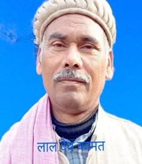

विदेह प्रथम मैथिली पाक्षिक ई पत्रिका

लालदेव कामत
डा. रमानन्द झा 'रमण' जीक रचना संसार
मधुबनी जिलान्तर्गत प्रसिद्ध लालगंज गाममे प्रभावशाली व्यक्ति श्री परमानन्द झा जीके घर दि. २ जनवरी सन् १९४९ ई०केँ एक बालकक जन्म भेल रहय, जिनक नाम पड़ल रमानन्द झा। रमा नन्द झा जी वाणिज्यक मेधावी छात्र रहल छथि। ओ एम ए. पीएचडी करैत आजिविका लेल भारतीय रिजर्व बैंक -शाखा पटनामे कार्यरत रहथि। ओतय सँ सेवा निवृत्ति पाबि साहित्य क्षेत्रमे रुचि लेलनि। डाक्टर झा जी यशस्वी सदस्य, मैथिली लेखक संघ-पटना केर छथि। हिनक सूक्ष्म दृष्टि, धैर्य आ अथक परिश्रम विगत ५० साल सँ मैथिली साहित्यक' वसंत देखल गेल छैक। विभिन्न पत्र-पत्रिकामे छिड़ियाएल ओ हेराएल रचना सभक उत्खनन कय सुधी पाठक सोझा मूल्यांकन रूपें समीक्षा सँ मैथिली साहित्यिकीमे प्राण फुँकने छथि। ओना खूब मेहनत आ श्रमसाध्य सँ कियो लेखक अपन रचनाकेँ पोथी-पुस्तिका छपबाबैत अछि,से कतेको सिद्धहस्त कवि-कथाकारके मौलिक रचना प्रकाशित करयमे प्रकाशक बिनु आर्थिक सेवाके रूचि लैत छैक। आओर छपल पोथीकेँ विज्ञापन पाठक धरि पोथी चर्चा आ समीक्षा गुण प्रकाश भेला सन्ता बजार भाव भेटैत छैक। से नि:शुल्क आ बेन रूपेँ सेहो पोथी परसल जाइछ। बिनु किनने पढ़ल पोथीक संग समीक्षा हेबाक जगह प्रसंशा बेसीतर कयल जाइत रहल अछि। मुदा रमानन्द बाबू ताहिमे अपवाद हेबाक तगमा लेखकीय समाज सँ मौखिक रूपेँ प्राप्त कयने छथि। बहुआयामी व्यक्तित्वक डा. झा जी साहित्यिकीमे बेछप परिचय बना लेने छथि, जहन कि ओ साहित्यक विद्यार्थी नहिं रहल छथि। हिनका मादे विशेष जनतब सोशल मीडिया आ पत्र- पत्रिकामे एवं विडियो सुनि सहृदय पक्षके पाठक अपन ज्ञान बढ़ा सकैत अछि। हिनक शोध-पत्र,आलेख आ सेमिनार'क वक्तव्य सँ सेहो समय-समय पर पाठकके जिज्ञासा क्षुधाक पूर्ति होयत। प्रकाशनके क्षेत्रमे स्तरीय प्रकाशक हिनक विवेच्य पोथी छपने छैक। प्रकाशित पोथीक संक्षिप्त विवरण लघु आलेखमे द्रष्टव्य होयत -:
नवीन मैथिली कविता-१९८२ ई०, मैथिली नऽव कविता-१९९३ , मैथिली साहित्य ओ राजनीति-१९९४ , अखियासल-१९९५ , बेसाहल-२००३ , भजारल-२००३, निर्यात कैसे शुरू करे ? हिन्दी-रिजर्व बैंक पटनाक प्रकाशन सम्पादित, मैथिली'क आरम्भिक कथा -१९७८ समीक्षा, श्यामानंद रचनावली १९८१ , जनार्दन झा जनसीदन कृत निर्दयी सासु -१९१४ आ पुनर्विवाह-१९२६ प्रकाशित-१९८४ , चेतनाथ झा कृत श्री जगन्नाथपुरी यात्रा-१९१० ; १९९४ ई०, रास बिहारी लाल दास कृत सुमति -१९१८; १९९६ ई० , जीबछ मिश्र कृत रामेश्वर-१९१६; १९९६ ई०, तेजधार झा कृत सुरराज विजय नाटक -१९१९; १९९६ ई०, भेंटघांट (भेंटवार्ता)- १९९८, रूचय तं सत्य नै तँ फुसि -१९९८, पुण्यानंद झा कृत मिथिला दर्पण १९२५; २००३ ई०, यदुवीर रचनावली १८८८-१९३४; २००३ ई०, श्री बल्लभ झा १९०५-१९४९; कृत विद्यापति विवरण -२००५, मैथिली उपन्यासमे चित्रित समाज २००३ अनुवाद लेल भाषा-भारती सम्मान २००४-५ (सी आई आई एल) मैसुर छओ बिगहा आठ कठा-फकीर मोहन सेनापतिक उड़िया उपन्यासक मैथिली अनुवाद लेल प्राप्त भेल छन्हि। पत्रिका सम्पादन आ सभ सम्पादन -: प्रयोजन १९९३ मासीक, कोषाक्षर -हिन्दी १९८२, घर-बाहर त्रिमासिक-चेतना समिति पटना। आदि।
अपन मंतव्य editorial.staff.videha@zohomail.in पर पठाउ।